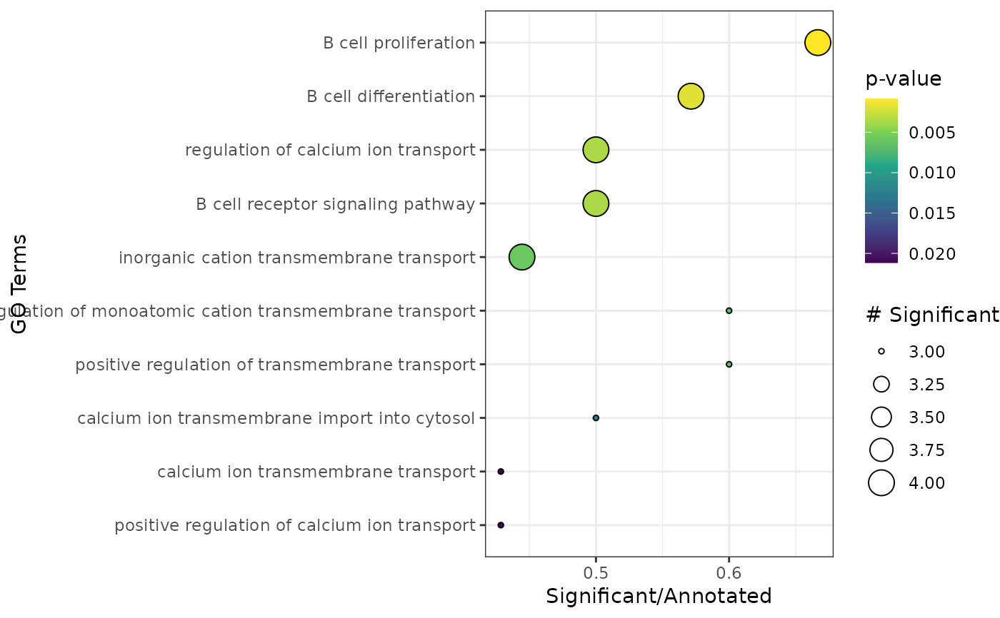

Generates plot for results from apl_topGO
plot_enrichment.RdPlots the results from the data frame generated via apl_topGO.
Examples
library(SeuratObject)
set.seed(1234)
cnts <- SeuratObject::LayerData(pbmc_small, assay = "RNA", layer = "counts")
cnts <- as.matrix(cnts)
# Run CA on example from Seurat
ca <- cacomp(pbmc_small,
princ_coords = 3,
return_input = FALSE,
assay = "RNA",
slot = "counts")
#> Warning:
#> Parameter top is >nrow(obj) and therefore ignored.
#> No dimensions specified. Setting dimensions to: 15
grp <- which(Idents(pbmc_small) == 2)
ca <- apl_coords(ca, group = grp)
ca <- apl_score(ca,
mat = cnts)
#>
|
| | 0%
|
|======= | 10%
|
|============== | 20%
|
|===================== | 30%
|
|============================ | 40%
|
|=================================== | 50%
|
|========================================== | 60%
|
|================================================= | 70%
|
|======================================================== | 80%
|
|=============================================================== | 90%
|
|======================================================================| 100%
enr <- apl_topGO(ca,
ontology = "BP",
organism = "hs")
#>
#> groupGOTerms: GOBPTerm, GOMFTerm, GOCCTerm environments built.
#>
#> Building most specific GOs .....
#> ( 1348 GO terms found. )
#>
#> Build GO DAG topology ..........
#> ( 3594 GO terms and 7817 relations. )
#>
#> Annotating nodes ...............
#> ( 207 genes annotated to the GO terms. )
#>
#> -- Elim Algorithm --
#>
#> the algorithm is scoring 519 nontrivial nodes
#> parameters:
#> test statistic: fisher
#> cutOff: 0.01
#>
#> Level 12: 1 nodes to be scored (0 eliminated genes)
#>
#> Level 11: 7 nodes to be scored (0 eliminated genes)
#>
#> Level 10: 17 nodes to be scored (8 eliminated genes)
#>
#> Level 9: 24 nodes to be scored (11 eliminated genes)
#>
#> Level 8: 53 nodes to be scored (17 eliminated genes)
#>
#> Level 7: 74 nodes to be scored (19 eliminated genes)
#>
#> Level 6: 103 nodes to be scored (27 eliminated genes)
#>
#> Level 5: 101 nodes to be scored (27 eliminated genes)
#>
#> Level 4: 74 nodes to be scored (27 eliminated genes)
#>
#> Level 3: 50 nodes to be scored (27 eliminated genes)
#>
#> Level 2: 14 nodes to be scored (27 eliminated genes)
#>
#> Level 1: 1 nodes to be scored (27 eliminated genes)
plot_enrichment(enr)
